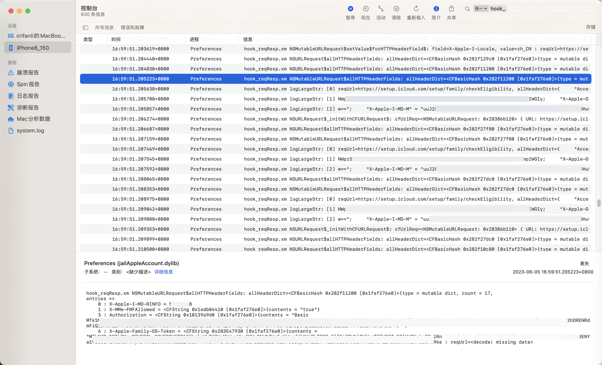
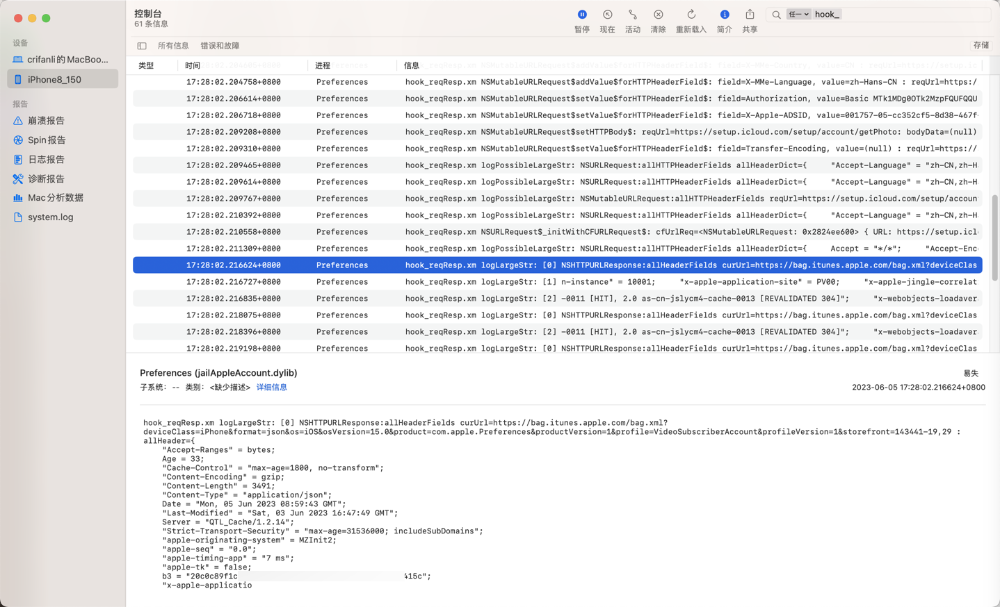
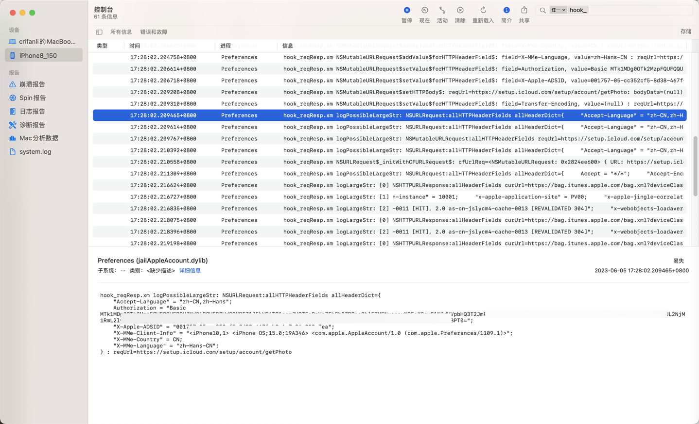

超过1K的日志打印
- os_log打印超过1K的长字符串会省略截断掉
- 解决办法：
- 输出到文件
- 【未解决】iOS逆向Apple账号：通过插件hook去打印AADeviceInfo的类的相关信息
- 【已解决】iOS中如何用ObjC保存数据到文件
- 转成数组多次打印
- 【已解决】iOS逆向：os_log日志字符串内容太长超过限制时拆分字符串多次打印
- 【已解决】iOS的ObjC中NSString如何按照长度拆分
- 【已解决】iOS的ObjC中如何初始化NSString多行字符串
- 【已解决】iOS的ObjC的NSString多行字符串中如何包含换行符
- 【已解决】iOS逆向：os_log日志字符串内容太长超过限制时拆分字符串多次打印
- 输出到文件
- 解决办法：
转成数组多次打印
代码
// os_log max length 1K=1024
// int LOG_MAX_LEN_ONCE = 1024;
//int LOG_MAX_LEN_ONCE = 1024 - 20;
//int LOG_MAX_LEN_ONCE = 1024 - 50;
//int LOG_MAX_LEN_ONCE = 1024 - 100;
//int LOG_MAX_LEN_ONCE = 1024 - 200;
int LOG_MAX_LEN_ONCE = 1024 - 150;
void logLargeStr(NSString* largeStr);
void logPossibleLargeStr(NSString* possibleLargeStr);
// log for large (> 10124) string
void logLargeStr(NSString* largeStr){
// NSMutableArray* splitedLineArr = splitToLines(largeStr, LOG_MAX_LEN_ONCE);
NSMutableArray* splitedLineArr = [CrifanLibiOS splitToLines:largeStr maxLenPerLine:LOG_MAX_LEN_ONCE];
for(int lineIdx = 0; lineIdx < splitedLineArr.count; lineIdx++){
NSString* curLineStr = splitedLineArr[lineIdx];
// os_log(OS_LOG_DEFAULT, "[%d] curLineStr=%@", lineIdx, curLineStr);
// iosLogInfo("[%d] curLineStr=%{public}@", lineIdx, curLineStr);
iosLogInfo("[%d] %{public}@", lineIdx, curLineStr);
}
}
// log for possible large string
void logPossibleLargeStr(NSString* possibleLargeStr){
if ([possibleLargeStr length] > LOG_MAX_LEN_ONCE){
// iosLogInfo("%@", @"log_for_large_str:");
logLargeStr(possibleLargeStr);
} else {
// iosLogInfo("%@", @"log_for_normal_str:");
iosLogInfo("%{public}@", possibleLargeStr);
}
}
...
%hook NSMutableURLRequest
...
-(id)allHTTPHeaderFields{
// NSDictionary<NSString *,NSString *> allHeaderDict = %orig;
id allHeaderDict = %orig;
NSURL *reqUrl = [self URL];
// if ((allHeaderDict != nil) && ([[allHeaderDict allKeys] count])) {
if (nonEmptyHeader(allHeaderDict)){
if( [allHeaderDict count] > 3){
// iosLogInfo("allHeaderDict=%{public}@ : reqUrl=%{public}@", allHeaderDict, reqUrl);
// NSString* headerUrlNSStr = [NSString initWithFormat:@"reqUrl=%{public}@, allHeaderDict=%{public}@", reqUrl, allHeaderDict]
// NSString* headerUrlNSStr = [NSString stringWithFormat:@"reqUrl=%{public}@, allHeaderDict=%{public}@", reqUrl, allHeaderDict];
// NSString* headerUrlNSStr = [NSString stringWithFormat:@"reqUrl=%@, allHeaderDict=%@", reqUrl, allHeaderDict];
NSString* headerUrlNSStr = [NSString stringWithFormat:@"NSMutableURLRequest:allHTTPHeaderFields reqUrl=%@, allHeaderDict=%@", reqUrl, allHeaderDict];
logPossibleLargeStr(headerUrlNSStr);
gNoUse = 1;
}
}
return allHeaderDict;
}
...
%hook NSURLRequest
...
// iosLogInfo("allHeaderDict=%{public}@ : reqUrl=%{public}@", allHeaderDict, reqUrl);
NSString* reqHeaderUrlStr = [NSString stringWithFormat:@"NSURLRequest:allHTTPHeaderFields allHeaderDict=%@ : reqUrl=%@", allHeaderDict, reqUrl];
logPossibleLargeStr(reqHeaderUrlStr);
...
%hook NSHTTPURLResponse
...
-(NSDictionary *)allHeaderFields{
NSURL* curUrl = [self URL];
NSDictionary* allHeader = %orig;
// iosLogInfo("curUrl=%{public}@ : allHeader=%{public}@", curUrl, allHeader);
NSString* respUrlHeaderStr = [NSString stringWithFormat:@"NSHTTPURLResponse:allHeaderFields curUrl=%@ : allHeader=%@", curUrl, allHeader];
logPossibleLargeStr(respUrlHeaderStr);
return allHeader;
}
...
最后实现： 之前没显示全的
- 最末尾
- 如果是变量，有时候是显示：
<decode: missing data> - 如果是字符串，往往显示：
<…>- 举例
"X-MMe-Client-Info" = "<iPhone10,1> <i<…>
- 举例
- 如果是变量，有时候是显示：
输出举例
之前是：
- reqUrl=
默认 16:59:51.205223+0800 Preferences hook_reqResp.xm NSMutableURLRequest$allHTTPHeaderFields: allHeaderDict=<CFBasicHash 0x282f11200 [0x1faf276e0]>{type = mutable dict, count = 17,
entries =>
0 : X-Apple-I-MD-RINFO = 50660608
1 : X-MMe-FMFAllowed = <CFString 0x1edb04410 [0x1faf276e0]>{contents = "true"}
3 : Authorization = <CFString 0x10139a9d0 [0x1faf276e0]>{contents = "Basic MTk1MDg0OTk2M...UHB3PT0="}
6 : X-Apple-Family-GS-Token = <CFString 0x283547930 [0x1faf276e0]>{contents = "MTk1MDg...0Mm9ke : reqUrl=<decode: missing data>

现在可以：
显示出多行：
默认 17:28:02.211309+0800 Preferences hook_reqResp.xm logPossibleLargeStr: NSURLRequest:allHTTPHeaderFields allHeaderDict={
Accept = "*/*";
"Accept-Encoding" = "gzip, deflate, br";
"Accept-Language" = "zh-CN,zh-Hans";
Authorization = "Basic MTk1M...BPT0=";
"X-Apple-ADSID" = "001757-05-c...5-8..8-4..f-b..6-7e...ea";
"X-MMe-Client-Info" = "<iPhone10,1> <iPhone OS;15.0;19A346> <com.apple.AppleAccount/1.0 (com.apple.Preferences/1109.1)>";
"X-MMe-Country" = CN;
"X-MMe-Language" = "zh-Hans-CN";
} : reqUrl=https://setup.icloud.com/setup/account/getPhoto
默认 17:28:02.216624+0800 Preferences hook_reqResp.xm logLargeStr: [0] NSHTTPURLResponse:allHeaderFields curUrl=https://bag.itunes.apple.com/bag.xml?deviceClass=iPhone&format=json&os=iOS&osVersion=15.0&product=com.apple.Preferences&productVersion=1&profile=VideoSubscriberAccount&profileVersion=1&storefront=143441-19,29 : allHeader={
"Accept-Ranges" = bytes;
Age = 33;
"Cache-Control" = "max-age=1800, no-transform";
"Content-Encoding" = gzip;
"Content-Length" = 3491;
"Content-Type" = "application/json";
Date = "Mon, 05 Jun 2023 08:59:43 GMT";
"Last-Modified" = "Sat, 03 Jun 2023 16:47:49 GMT";
Server = "QTL_Cache/1.2.14";
"Strict-Transport-Security" = "max-age=31536000; includeSubDomains";
"apple-originating-system" = MZInit2;
"apple-seq" = "0.0";
"apple-timing-app" = "7 ms";
"apple-tk" = false;
b3 = "20...8-e6...15c";
"x-apple-applicatio
默认 17:28:02.216727+0800 Preferences hook_reqResp.xm logLargeStr: [1] n-instance" = 10001;
"x-apple-application-site" = PV00;
"x-apple-jingle-correlation-key" = ED...A;
"x-apple-max-age" = 1800;
"x-apple-request-store-front" = "143441-19,29";
"x-apple-request-uuid" = "2...f-1cbf-5b7c-7..2-a8...8";
"x-b3-spanid" = e6...5c;
"x-b3-traceid" = 20...c8;
"x-cache" = "REVALIDATED from NGCDN";
"x-cache-status" = REVALIDATED;
"x-daiquiri-instance" = "daiquiri:10001:daiquiri-all-shared-dc-5..6-qn2wb:7..:23..81:daiquiri-amp-kubernetes-shared-dc-ak8s-prod-pv1-amp-daiquiri-ingress-prod, daiquiri:51..4:pv00p00it-az..ext003:7..:23..81:daiquiri-amp-aws-shared-ext-pv00-prod";
"x-qtl-request-id" = 60...c;
"x-responding-instance" = "MZInit2:10001:::";
"x-via" = "1.1 as-cn-fjxmcm8-cache



而没有超过1K限制的，就只显示一行：
默认 17:28:02.209465+0800 Preferences hook_reqResp.xm logPossibleLargeStr: NSURLRequest:allHTTPHeaderFields allHeaderDict={
"Accept-Language" = "zh-CN,zh-Hans";
Authorization = "Basic MTk...PT0=";
"X-Apple-ADSID" = "0...7-05-c...5-8d38-467f-b2c6-7...ea";
"X-MMe-Client-Info" = "<iPhone10,1> <iPhone OS;15.0;19A346> <com.apple.AppleAccount/1.0 (com.apple.Preferences/1109.1)>";
"X-MMe-Country" = CN;
"X-MMe-Language" = "zh-Hans-CN";
} : reqUrl=https://setup.icloud.com/setup/account/getPhoto
